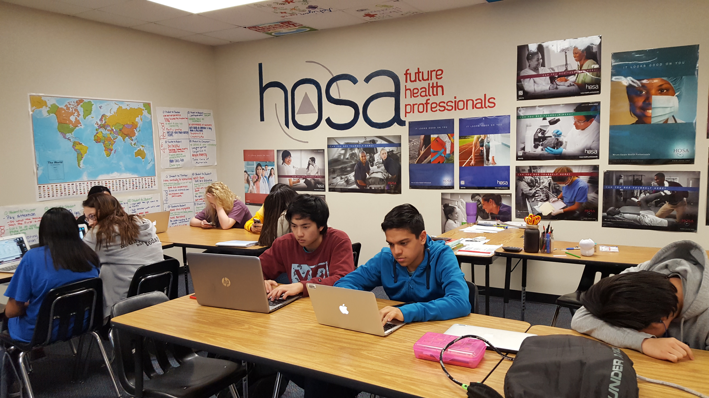

Brought to life just over a decade ago, guided by Mary Elizabeth Boyd’s vision, our school has always been driven to rise above its own expectations. From academics to athletics, we have it all!

At McKinney Boyd High, we pride ourselves on providing our students with all the tools and skills they’ll need to succeed later in life. With a variety of courses and programs designed to maximize their potential, Boyd truly is the best place for any student to grow into their ideal self.
Boyd boasts a large population of over 3000 students but still manages to provide the best quality education for all of them. With an emphasis on both athletics and academics, our facilities include over 40 classrooms, a well-stocked Learning Commons, as well as competition and practice gymnasiums.

Not only does our school value the academic prowess of the students, but it also seeks to expand their horizons. We have many active clubs and organizations, from the prestigious National Honor Society to the informal Pi Club. No matter where your interests lie, you can find your calling at Boyd.